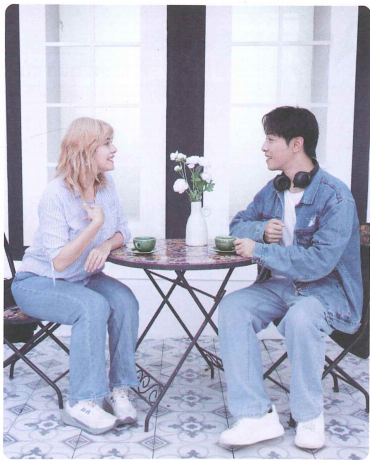
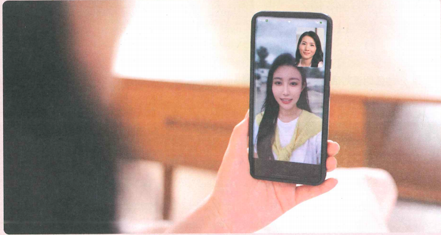
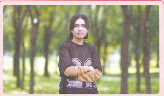

我是中国人
Mình là người Trung Quốc
22 từ mới · 3 bài khóa · 是 · 的 · câu hỏi 吗
🎯 Mục tiêu
Nghe hiểu và sử dụng câu chữ “是” để diễn đạt sự đồng nhất hoặc phân loại; nắm cách dùng trợ từ kết cấu “的”; nắm cách dùng câu hỏi “có… (hay) không?” với “吗”.
Cụm 1 · Từ vựng
5 từ trước Bài khóa 1.
Bài khóa 1 · 我是中国人
Trong khuôn viên trường, Lý Văn và Bạch Gia Nguyệt gặp nhau lần đầu và tiếp tục trò chuyện.

🧠 Ngữ pháp 1–2
1. Câu chữ “是”
“是” dùng để định danh người hoặc sự vật, biểu thị đồng nhất hoặc phân loại. Phủ định là “不是”.
我是法国人。
她是中文老师。
我老师不是法国人。
2. Trợ từ kết cấu “的”
“的” đặt giữa định ngữ và trung tâm ngữ để biểu đạt quan hệ sở hữu.
白家月的中文老师 · 你的名字
Khi trước “的” là đại từ nhân xưng và sau là từ chỉ quan hệ thân thuộc hoặc danh từ chỉ người, “的” có thể lược bỏ: 我老师、我学生、你同学、我妈妈.
Hoàn thành hội thoại
（1）A：这是我（ ）。 B：老师，您好！
（2）李文：请问，你（ ）叫什么名字？
白家月：我（ ）叫王一飞。
Cụm 2 · Từ vựng
7 từ trước Bài khóa 2.
Bài khóa 2 · 这是谁？
Sau giờ học, Annie đang xem ảnh trên điện thoại của Trần Thiên Trung ở trong lớp học.
Cụm 3 · Từ vựng
10 từ trước Bài khóa 3.
Bài khóa 3 · 你工作还忙吗？
Ở nhà, Vương Nhất Tuyết gọi video cho Vương Nhất Phi.

🧠 Ngữ pháp 3
3. Câu hỏi “có… (hay) không?” với “吗”
“吗” là trợ từ ngữ khí, thường đặt cuối câu để biến câu trần thuật thành câu hỏi nghi vấn.
你也很忙吗？
你是他的中文老师吗？
你有姐姐吗？
✏️ Luyện tập tổng hợp
Phần 1 · Chọn từ thích hợp điền vào chỗ trống
A 哪 B 吗 C 谁 D 中国人 E 想
1. 你工作忙 ______？
2. 我很 ______ 你们。
3. 白家月：你是 ______ 国人？ 李文：我是 ______。
4. 白家月：她是 ______？ 安妮：她是陈天中的女朋友。
Phần 2 · Mỗi ảnh là một câu riêng
Câu 1

他 ______ 陈天中，是泰国人，他 ______ 也 ______ 泰国人。
Câu 2
王一飞是 ______ 中文老师，她 ______ 很 ______。
✅ Tổng kết
Bạn đã học
- 18 từ mới của Bài 3.
- 3 bài khóa với audio 3-1, 3-3, 3-5.
- Câu chữ 是 và phủ định 不是.
- Trợ từ kết cấu 的.
- Câu hỏi nghi vấn với 吗.
Ôn tập
我是中国人。
我的中文老师也是中国人。
这是谁？
你工作还忙吗？